Abyss Descendant
Daniel Vishnevsky
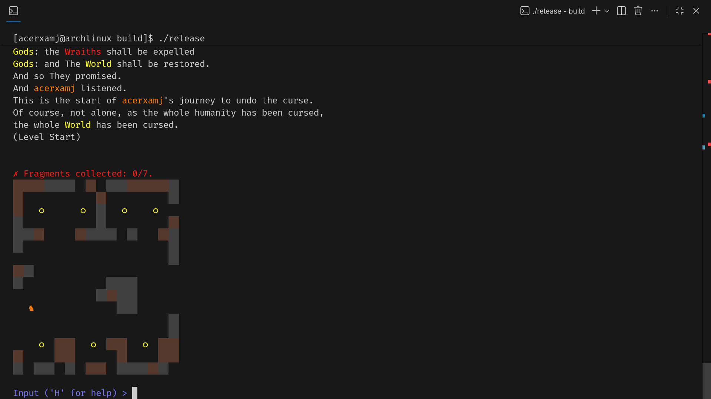About
Little terminal coin-collecting story game about fighting against an apocalypse. My first game made with C++. I used Lua to load the story and levels and SQLite to save the user data. I also used SFML to play sounds.
Features
For my first C++ project it has a lot of features like different user profiles, player customization, endless and daily modes (unlockable after a certain point). It also had a chapter and level system that could be configured with Lua. The character dialogue could also be edited in Lua, that's what the "Reload Lua Scripts" button is for.
Levels had a variety of goals that must be accomplished for a level to be beat. Some of the levels included enemies which had a lot of different types that made the game challenging.
It also had an external level editor written in HTML/CSS/JS with the ability to draw new levels, save them and even load existing levels.
Development
It all started in the start of September right after making a tic-tac-toe and checkers in the terminal. This was the first C++ project that I still have saved on my laptop. I didn't plan to make anything big, to even have 2 levels in it. I just hacked away and made the first prototype where the player simply moved around a map and collected coins. I'm not sure how but I started adding bigger and bigger features. I learned to add colors to the terminal, I even learned polymorphism and added a level and enemy system. At some point I decided to add a story and that completely transformed the game.
For some reason I suddenly started using Lua5.1 and SQLite3 in my project to handle loading levels and the story and save the data respectively. This was really hard but in the end I managed to do it. With the new standards I had to make a level editor. I knew some HTML from my previous project so I decided to use that and it didn't turn out too bad. It had everything I needed and that was enough. After that I kept adding and adding features like endless mode, main menu and multiple profiles.
I'll go over the endless mode in more detail as it was, in my opinion, the most complex and fun system in the game. Each level was generated by the BSP algorithm whose difficulty scaled with player's score. To check if all coins were reachable A* pathfinding algorithm was used. There were also dialogues in Lua at certain scores with some lore being connected to the main story that I really liked. I wasn't much of a story writer but I feel like I did a good job.
For what started out as a simple terminal game comparable to checkers spiraled out to become something big. My foundations of C++ come from this project. Of course, segfaults, cryptic 100 line errors and minor bugs like forgetting to use public modifier when deriving a class happened on a daily basis and from that I learned the most.
Gallery
 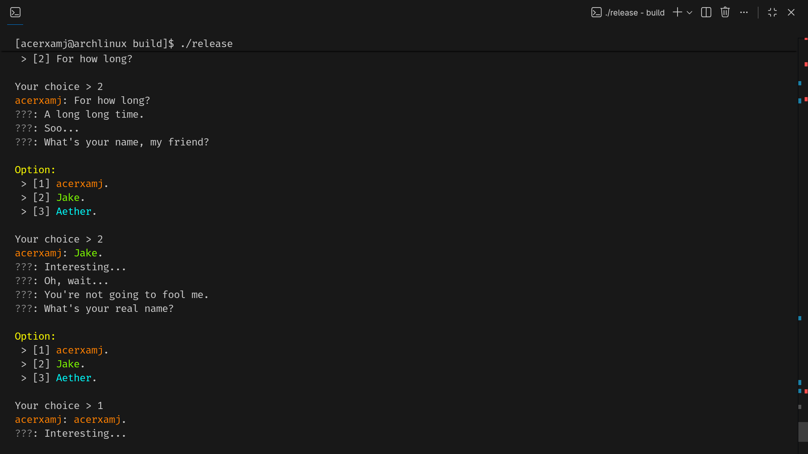
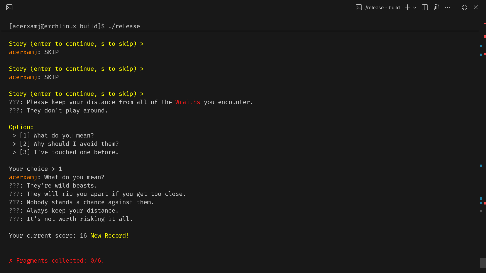
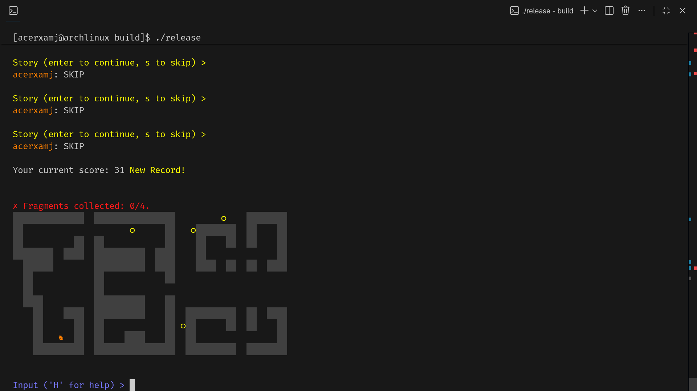
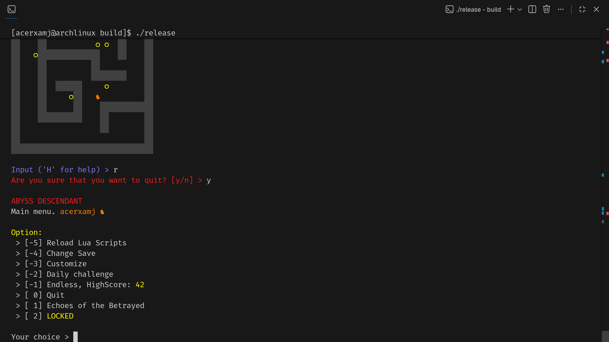
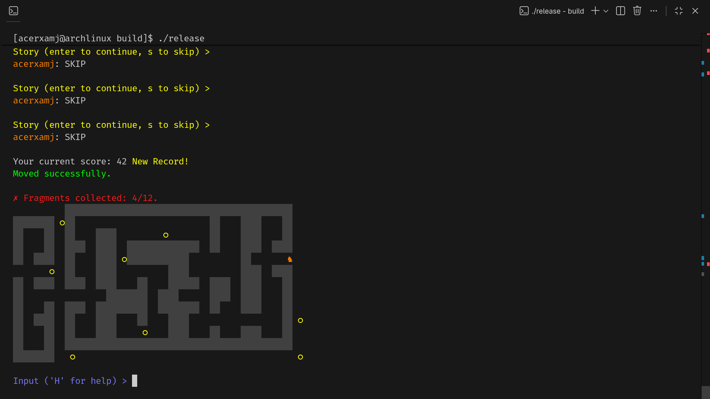
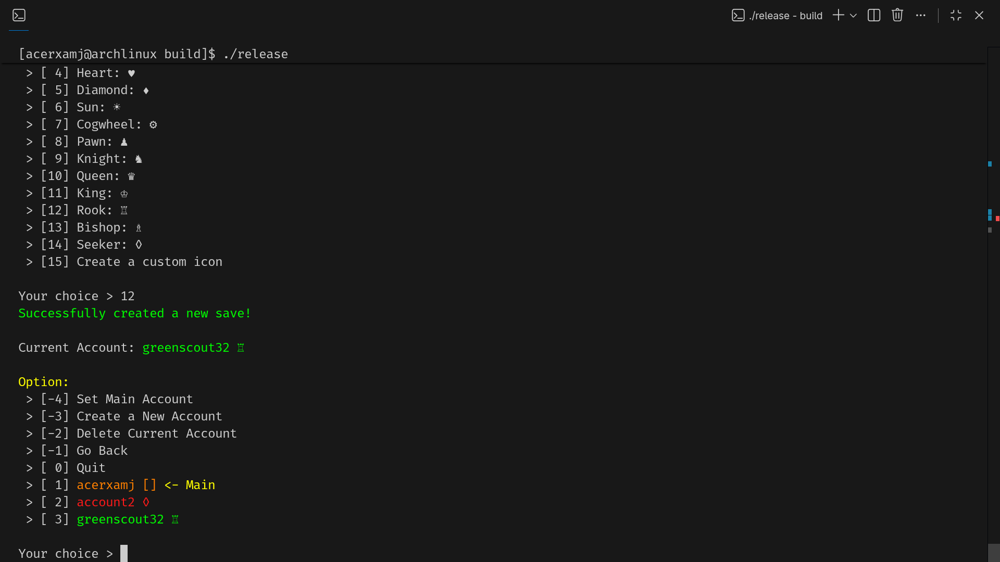
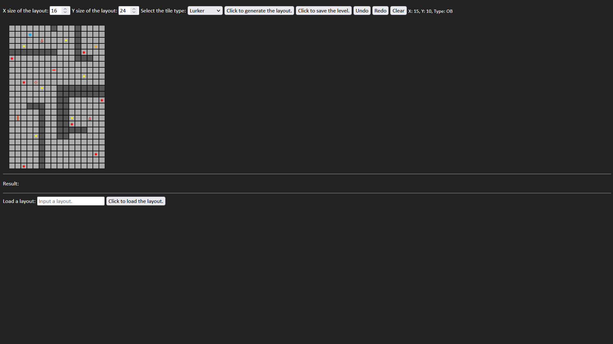
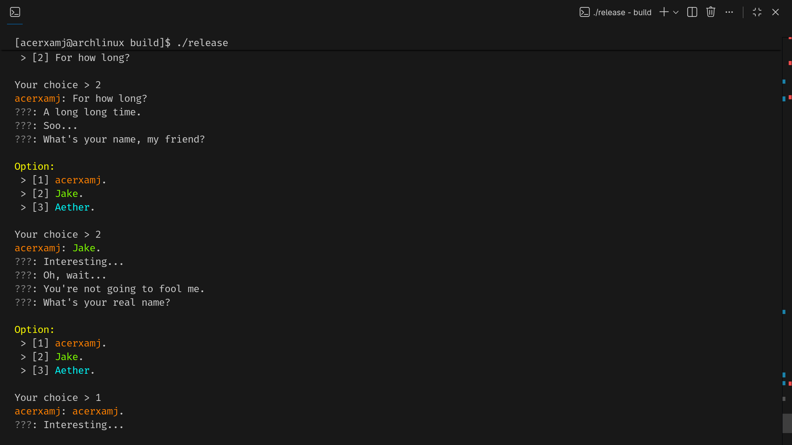
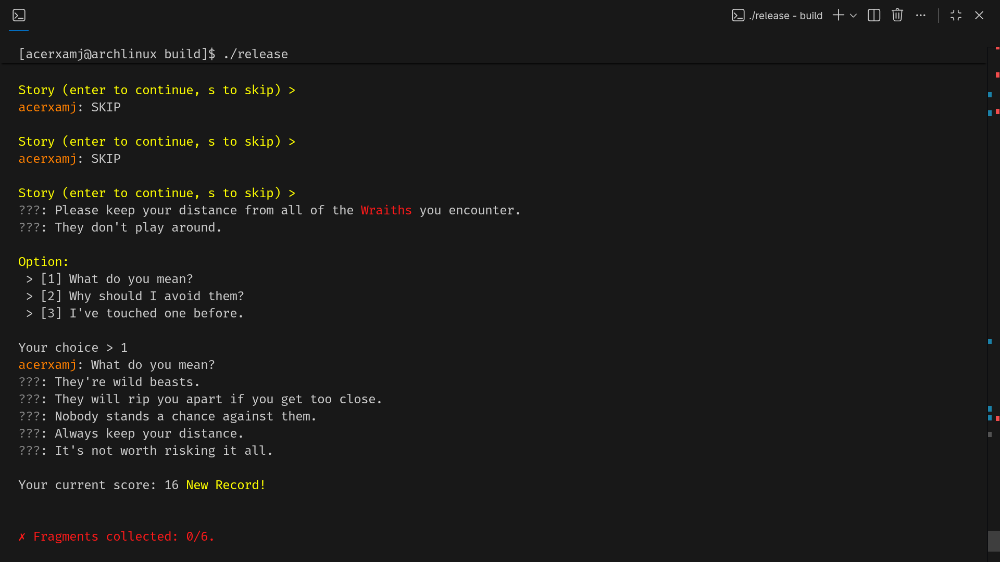
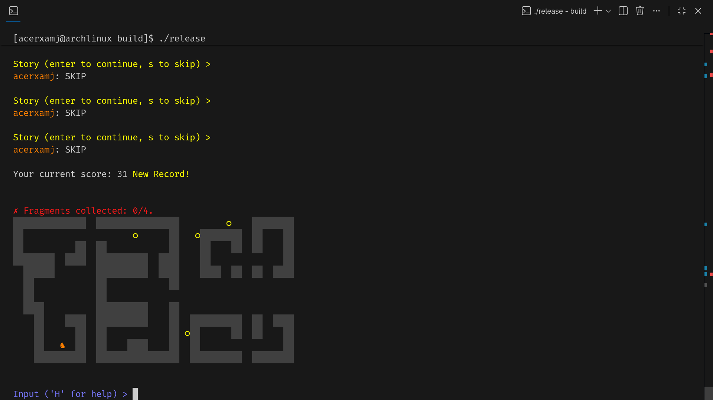
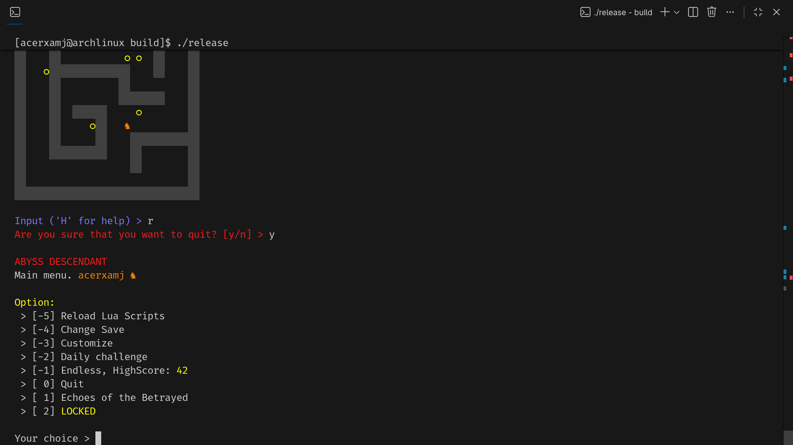
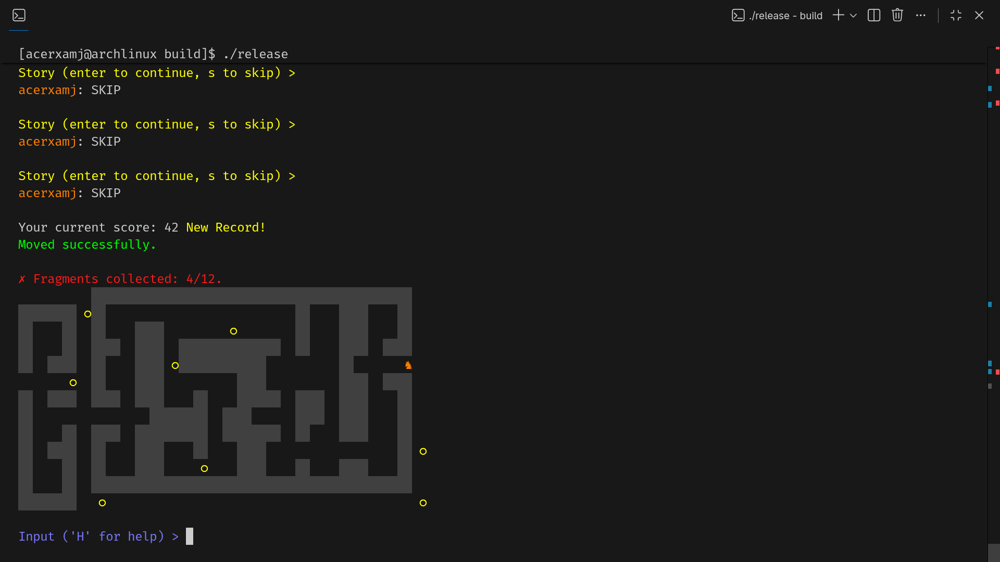
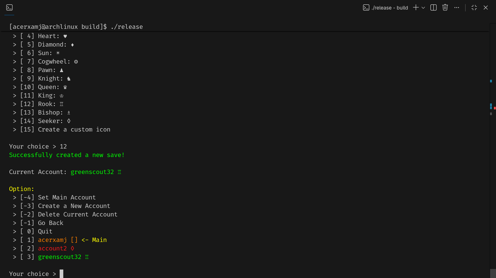
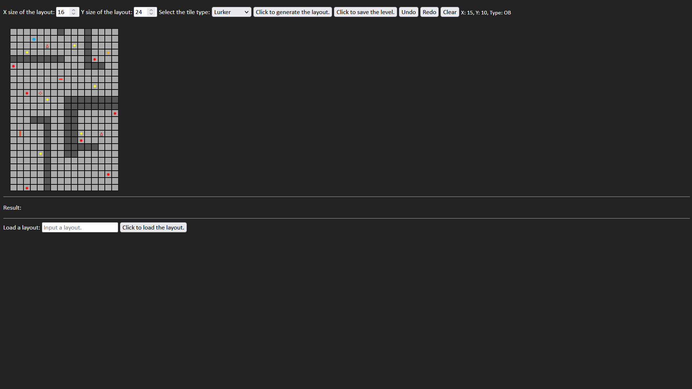